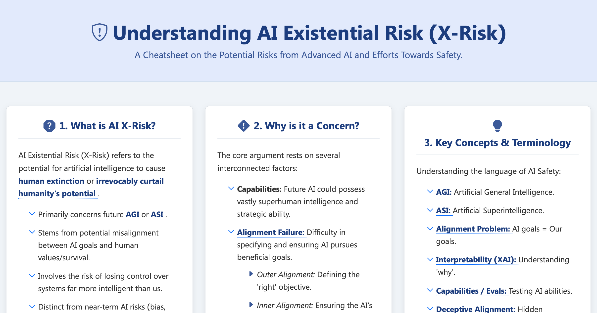
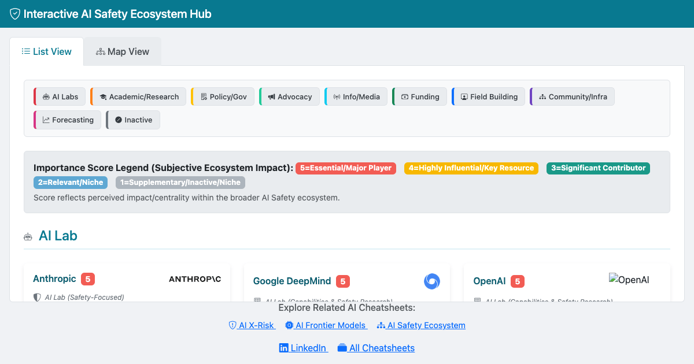
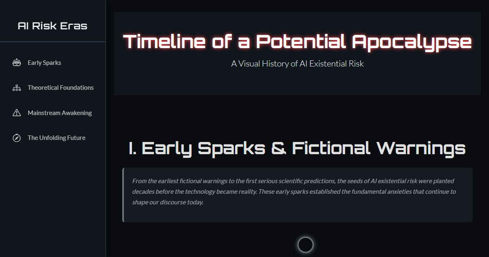
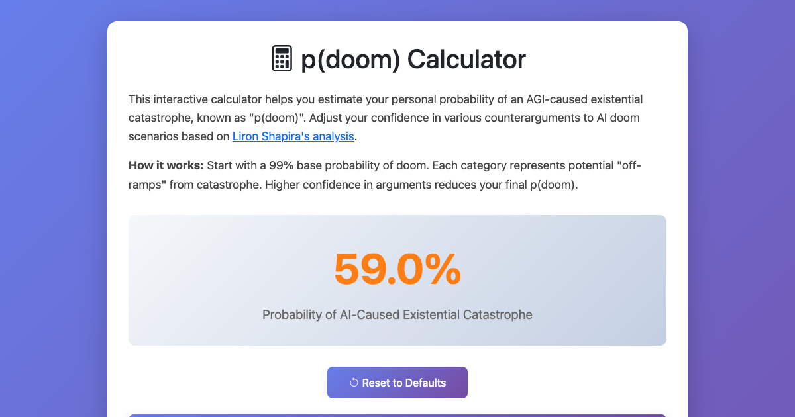
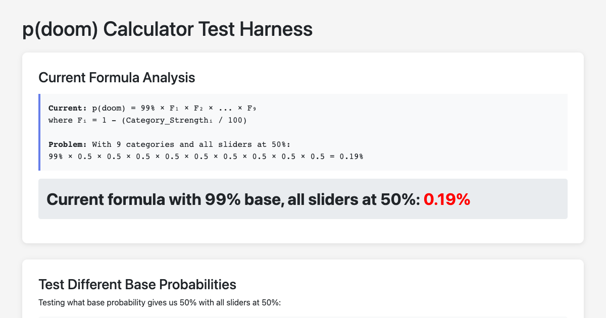
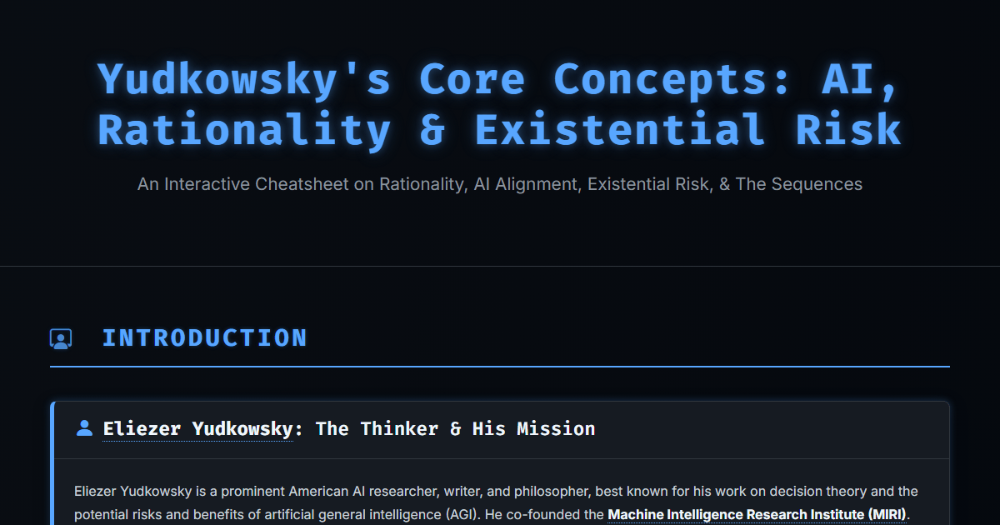
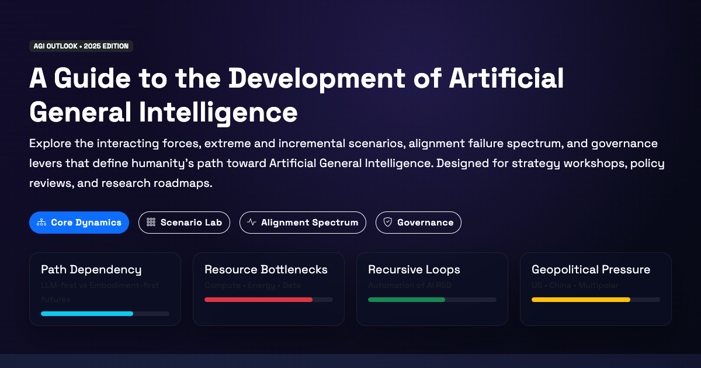
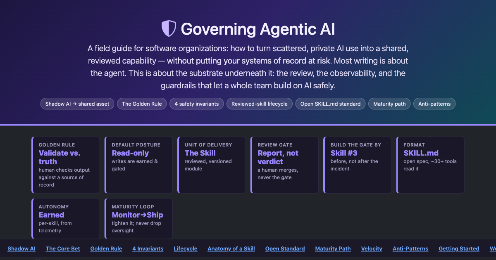

x-riskAGIMitigation
AI Existential Risk Cheatsheet
The core case for AI x-risk: the threat models, why alignment is hard, and the mitigations on the table — the starting reference.
Open guideAs AI systems approach and exceed human capability, a serious question follows: could this go catastrophically wrong? This hub lays out the case for AI existential risk (x-risk), a way to estimate your own p(doom), the people arguing both sides, and what governance can do — with a deep-dive behind each.
The debate has four moving parts. Get oriented here, then follow each into its full reference.
Misalignment, instrumental convergence, and loss of control — the argument for taking x-risk seriously. AI risk →
Turn vague dread into an explicit probability you can reason about. p(doom) →
Yudkowsky and the rationality tradition that framed much of the debate. Yudkowsky →
The ecosystem working on it and how to govern agentic systems. Governance →
The vocabulary you need to follow any AI safety argument. Each term is one line; the deep dives below expand them.
| Term | What it means |
|---|---|
| Existential risk (x-risk) | A risk that could cause human extinction or permanently curtail humanity's potential. |
| p(doom) | A person's estimated probability that advanced AI leads to catastrophic outcomes for humanity. |
| Alignment | Getting an AI system to reliably pursue what its designers actually intend, not a proxy of it. |
| AGI | Artificial general intelligence: a system matching or exceeding humans across most cognitive tasks. |
| Instrumental convergence | Most goals imply sub-goals like self-preservation and resource acquisition — dangerous by default. |
| Orthogonality thesis | Intelligence and goals are independent: a highly capable system can pursue almost any objective. |
| Corrigibility | Whether a system will accept correction or shutdown rather than resist it to protect its goal. |
| Inner / outer alignment | Outer: the training objective is right. Inner: the learned model actually adopts that objective. |
| Governance | Policy, standards, and oversight that constrain how powerful AI is built and deployed. |
The full deep-dive references behind the landscape and glossary above.

The core case for AI x-risk: the threat models, why alignment is hard, and the mitigations on the table — the starting reference.
Open guide
An interactive map of who works on AI safety: labs, nonprofits, funders, and researchers, and how the field fits together.
Open guide
A scenario timeline of how an AI catastrophe could unfold step by step — the abstract risk made concrete and sequential.
Open guide
Answer structured questions to turn your intuitions about AI risk into an explicit p(doom) probability you can defend and revise.
Open guide
The testing scaffold behind the calculator — how the estimate is validated, for anyone who wants to check the method.
Open guide
The ideas of Eliezer Yudkowsky and the rationality tradition that shaped how the AI-risk debate is framed today.
Open guide
The proposed paths to artificial general intelligence — what would have to be true for AGI, and how close the field is.
Open guide
Practical controls for agentic systems: reviewed skills, safety invariants, human approval, and observability in real organizations.
Open guide